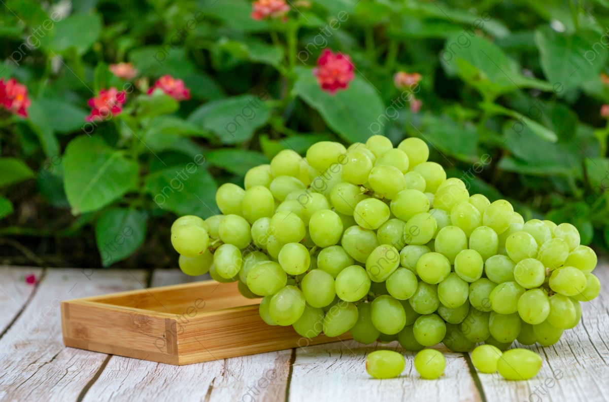

About Grapes
Grapes are true berries. The fruit wall (pericarp) is fleshy throughout. Fruit can be green, red,
and deep purple. A grape crop is a deciduous woody vine belonging to the flowering plant genus
vitis.The grape plant is a perennial bush featuring helices tendrils and trails. Grape is a
vine a
climbing plant. The tendrils, which are degenerated inflorescences, grow on stems.
Leaves are shaped like a heart. They are big and placed opposite to each other. They show
prominent nerves. Color, size, and shape of leaves and fruits vary with the variety.
There are seedless and seeded varieties. The seeded variety may show upto 4 seeds per fruit.
Seeds have 4-6% tannins.
Maharashtra is the number one grape producing state in India. Grape cultivation is prevalent in
Nasik, Pune, Ahmednagar, Sangli, Osmanabad, Solapur, and Satara districts of the state.
Nasik is called the Wine Capital of India. It also has a grape packhouse facility.
After Maharashtra, grape crop is widely produced in Kolar, Bangalore, and Bijapur areas of
Karnataka, in Rangareddy, Ananthapur, and Medak areas of Andhra Pradesh, and in Tamil Nadu.
Condition to Grapes grow :-
-
Type of soil require
Soil for banana should have good drainage, adequate fertility and moisture. Deep, rich loamy
soil with pH between 6-7.5 are most preferred for banana cultivation. Ill drained, poorly
aerated and nutritionally deficient soils are not suitable for banana. Saline solid,
calcareous soil are not suitable for Banana cultivation. Avoided soil of low laying areas,
very sandy & heavy black cotton with ill drainage.
A soil that is not too acidic & not too alkaline, rich in organic material with high
nitrogen content, adequate phosphorus level and plenty of potash are good for banana.
-
Climate
Grape is a highly versatile crop. It can be grown in almost all kinds of climate viz:
Temperate: In America, Australia, Russia, and Europe.
Tropical: In West and South India, Argentina, Chile, Kenya, and Venezuela.
Sub-tropical: In North India, China, Pakistan, Israel, Iraq, Iran, and Afghanistan.
Mediterranean climate is the best for grape cultivation.
Vines stay evergreen in a tropical climate. Grape crop performs beautifully in the area that
gets no or very less rain during the ripening time of fruits.
-
Irrigation
Irrigation practices differ in different regions. It depends on pruning time, monsoon
pattern, soil’s water holding capacity, variety, training system, and spacing.
Irrigate the vineyard once every 3 days in newly planted crop.
In case of drip irrigation, a single emitter is fixed at the vine base. Later, it is
increased to 2 and then 4.
Heavy irrigation is done immediately after pruning to wet the whole root zone and trigger
active growth.
During winter, grape crop requires light irrigation in a gap of 10-12 days.
In case of rainfall, the next irrigation is skipped or delayed.
Frequency of irrigation is decreased during fruiting, anthesis, and after softening of berry
for enhancement in fruit quality.
-
Manuring & Fertilization
Soils of vineyard are either heavy clay soils, or sandy loam soils. So, organic manure is of
high importance.
Apply 20 grams urea to just planted vines in March. Repeat in May and July.
In the second year, follow the below fertilizer schedule:
Apply whole FYM (Farm Yard Manure) + superphosphate + half Nitrogen (N) + half Phosphate (K)
immediately after pruning.
Apply the rest of N and K after setting of fruit in April.